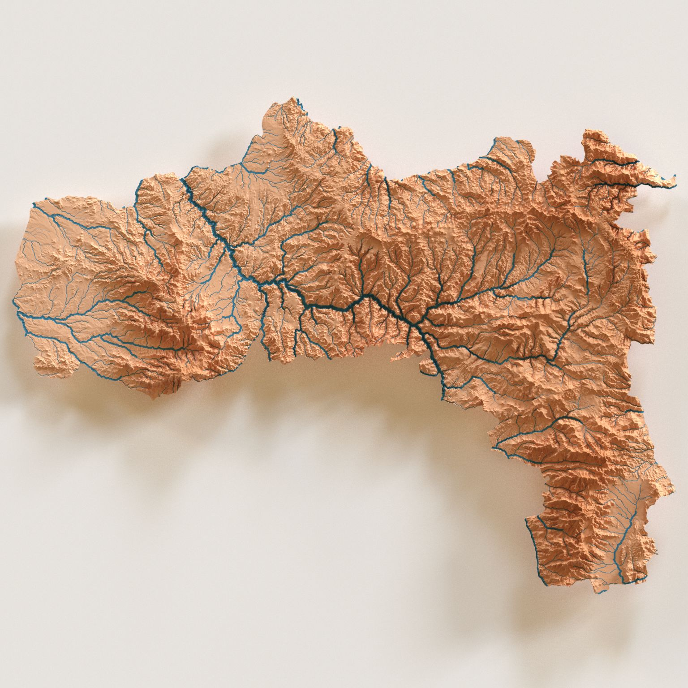
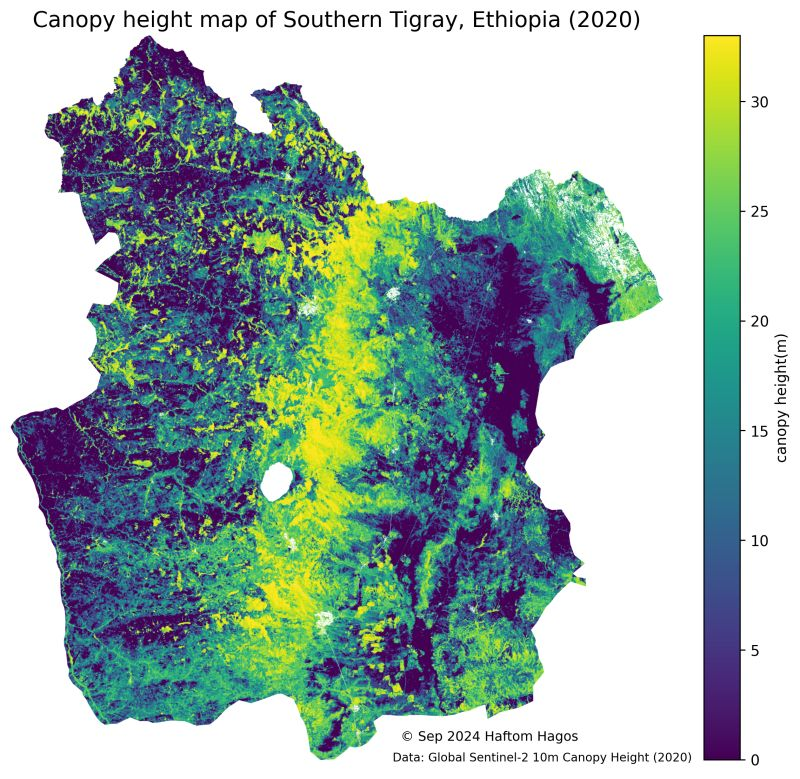
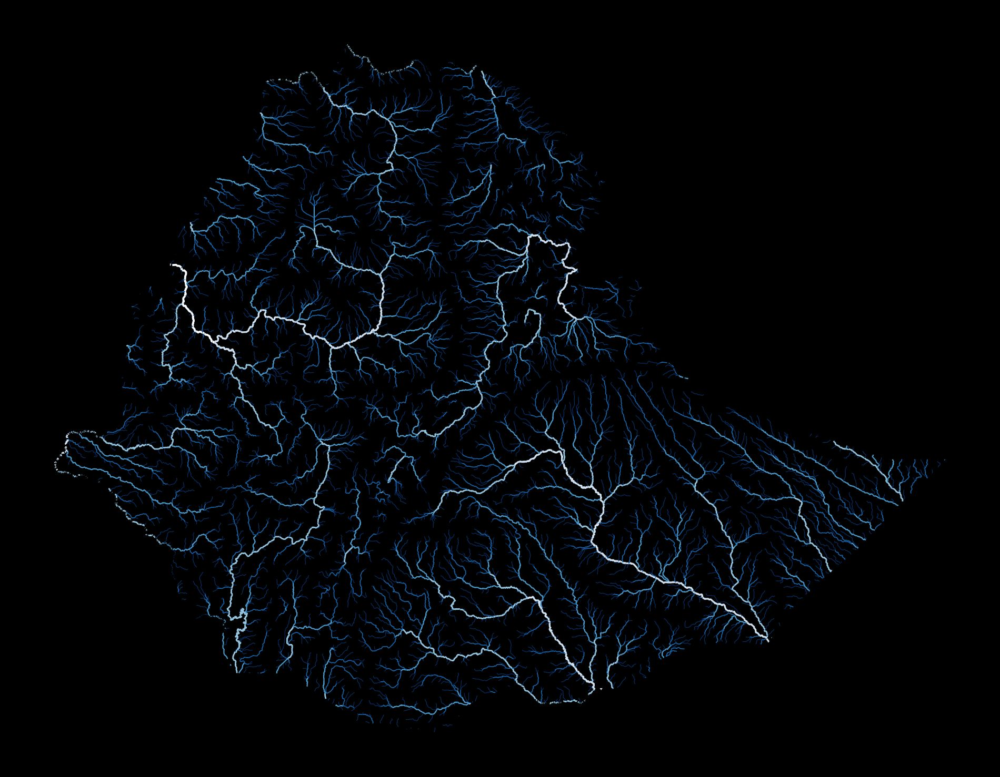

Select an area on the map and download NDVI or Land Cover maps.
Data
This section provides administrative boundary datasets of Ethiopia in GeoPackage format.
The datasets are organized into different administrative levels:
Each dataset is available in two coordinate reference systems:
Geographic Coordinate System (GCS): EPSG:4326 – WGS 84
Projected Coordinate System (PCS): EPSG:32637 – WGS 84 / UTM Zone 37N
The GCS version is useful for web mapping and global datasets, while the PCS version is recommended
for spatial analysis and distance/area measurements within Ethiopia.
These datasets are suitable for GIS applications, research, and visualization projects related to
Ethiopia’s administrative divisions.
Explore our collection of thematic and 3D maps from different parts of Ethiopia. Click an image to enlarge and learn more.
3D visualization of canopy height model for Addis Ababa.
This map illustrates urban vegetation structure and tree distribution, highlighting canopy cover variations across the city.
Another perspective of Addis Ababa’s canopy height.
Generated from LiDAR-derived data to emphasize vertical vegetation profiles in urban landscapes.
2023 Land Cover Classification for Addis Ababa.
Classes include vegetation, built-up areas, water, and bare soil, mapped using Sentinel imagery and supervised classification.
Road network map of Addis Ababa.
The map combines OpenStreetMap road data with satellite imagery to highlight infrastructure density and accessibility.

River network of Tigray Region.
Hydrological features mapped using DEM and flow accumulation models to trace drainage patterns.

Canopy height model of Southern Tigray.
Derived from LiDAR data and processed with rioxarray in Python to reveal spatial vegetation distribution.
3D land cover map of Southern Tigray.
Combines elevation and classification data to visualize land use distribution in three dimensions.

National river network of Ethiopia.
Includes major rivers and tributaries extracted from DEM hydrological analysis.
Contact
Contact us for more information about our datasets and maps.